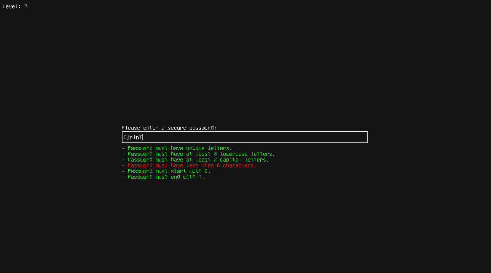

welcome to my site
beep boop
Transition Altitude

2020 - Transition Altitude, FFS2020 Game Jam, Unity
It's one of these ideas that sound great in your head: strategic paragliding.
Managed to push it through for Finally Finish Something Game Jam. Game has around 10 levels, all by me in Unity.
I'm happy with the idea, less with the Level Design that was untested and ends up frustrating.
> Download
Pacman
2020 - Pacman, C99
Just a Pacman clone. Made with SDL. All graphics and audio is by me.
First delve into pathfinding and making a finished product.
> Repo
Simple Lightweight 3d Game Engine

2020-2021 - Simple Lightweight 3D Game Engine, C/C++
My first delve into 3D programming. Started as a playground for raytracing in 2020 until I rewrote it completely in C-Style C++ using a classic rasterizer. Delved a bit into pbr at some points.
Project on main branch can load a gltf and PNG textures, display it, has volumetric lighting, can handle vertex skinning and skeletal animations. All of it without libraries (yes I made my own PNG reader for fun). Backup of previous states is kept in different branches. Probably the most effort I've put into something.
> Repo
Password Game

2021 - Password Game, C-Style C++
A bit of a dumb idea I had one day of making a puzzle game about these pesky password requirements.
Made in a day. I still like the general idea but lack ideas to make it more interesting. I might update it at some point.
> Repo
Gameboy Emulator

2021-2022 - Gameboy Emulator - C (later ported in Jai)
I love assembly and nitty gritty stuff. So I made an emulator of a console that I grew up with, the Gameboy.
Made with SDL. CPU is very accurate. PPU may have innacuracies (need to test on more games). And APU is pretty close, having trouble with the noise channel.
You can still play and enjoy games normally without issues. Features a debugger that can step through instructions and display key memory locations.
> C Repo > Jai Repo
Jaida

2022 - Jaida - Jai
A small 2D Zelda clone in Jai. Made to familiarize myself with the language. The game takes approx 10 mins to complete.
It features a mob battles, a single main quest, dialogs, a boss battle and a complete soundtrack composed by me.
Made using libraries provided with the language.
Art assets are from from pixel-boy (cc0)
> Repo
Sl3dge-Jai

2022-2023 - Simple Lightweight 3D Game Engine (Jai version)
A revisit of my previous engine this time in Jai. Made to support an ongoing project. I used this to project to keep experimenting with 3D rendering and engine architecture.
Tried WGPU for a bit but decided to go back to Vulkan in the end. Features include vertex skinning, skeletal animations, immediate mode rendering for UI/2D.
For a demo projet please see here
> Repo